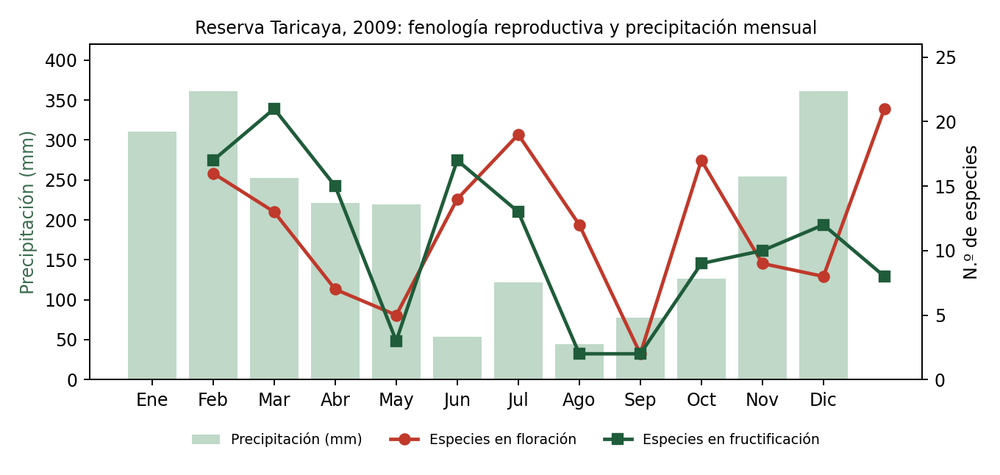
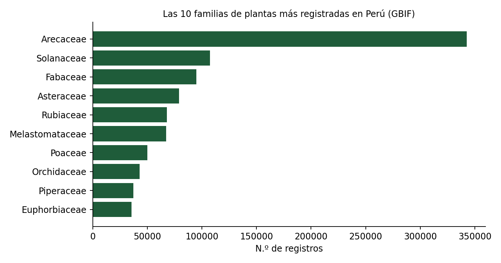

Formación en Biología, más de siete años como consultor e investigador de campo, y hoy SQL, Python y Power BI para responder preguntas de negocio, ecología y medio ambiente con el mismo rigor.
Antes de limpiar datos en Python, limpiaba y ordenaba muestras botánicas en el Herbarium Areqvipense de la Universidad Nacional de San Agustín. Entre 2003 y 2010 trabajé como consultor e investigador en botánica y estudios de línea base ambiental: coordiné, como investigador principal, el Proyecto Botánico de la Reserva Ecológica Taricaya para Projects Abroad, y colaboré con Knight Piésold, Vector S.A.C. y el World Wildlife Fund. Más tarde dirigí la parte académica de dos instituciones educativas en Arequipa.
Hoy combino ese rigor de campo con SQL, Python y Power BI para responder preguntas de negocio, ecología y medio ambiente con datos. Me certifiqué como analista en TripleTen, y sigo practicando: mi proyecto más reciente reanaliza los datos de mi propia investigación en la Amazonía, publicados con sus resultados reales y sus límites.
Lo que uso a diario para limpiar, analizar y comunicar datos.
Cada repositorio documenta objetivo, metodología, resultados y limitaciones — no solo el código.

Reanálisis de datos de campo de un proyecto botánico que coordiné en la Amazonía peruana (2008–2009).
Ingresos, costos, margen y ROI de campañas por país (AdventureWorks).
Tráfico (TomTom) y economía urbana (OECD) de 15 ciudades latinoamericanas.
Casi 96,000 registros de ventas semanales consolidados en un dashboard interactivo.

Panorama de 1.8 millones de registros de plantas de Perú, consultados en vivo a la API pública de GBIF.
Busco un puesto remoto como analista de datos en ecología y medio ambiente, agricultura, investigación o educación, donde mi método científico y mi capacidad de comunicar resultados puedan marcar la diferencia.